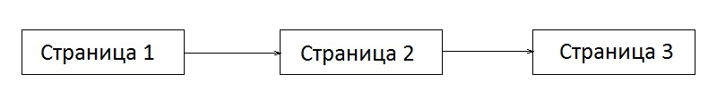
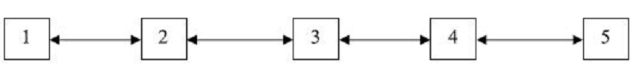
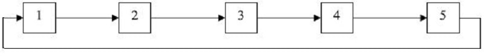
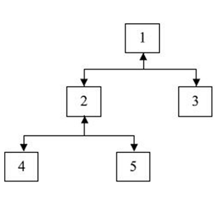
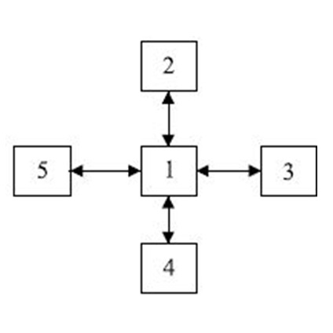
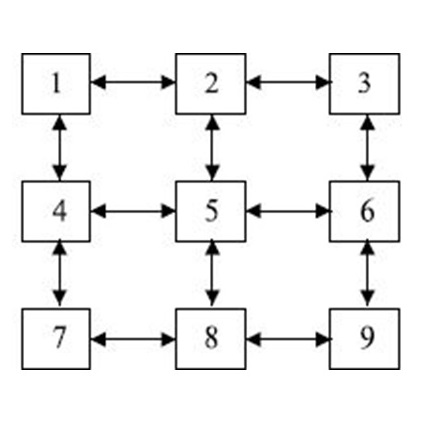
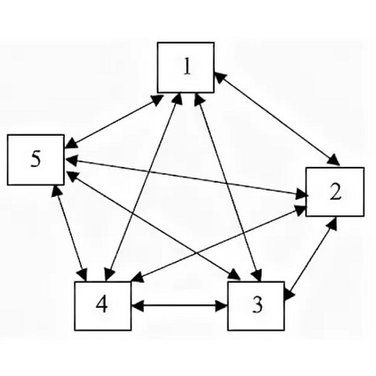

Навигационная система сайта
здесь различные навигационные системы веб‑сайтов и примеры их реализации
Навигационные системы веб-сайтов
Навигация сайта – это возможность перехода между его страницами. Чем проще и понятнее навигационная система, тем лучше для посетителей, поскольку она позволяет находить требуемую информацию и быстро ориентироваться в разделах сайта.
Критерии качественной навигации:
- Простота – все элементы меню или пользовательского интерфейса должны быть хорошо видимыми и интуитивно понятными для любого пользователя. В идеале, чтобы пройти к любой странице или разделу сайта, пользователю должно понадобиться не более 3 кликов.
- Доступность на любой странице сайта – качественно проработанные элементы навигации должны присутствовать на каждой из страниц сайта, чтобы у пользователя была возможность перейти из любого раздела в необходимый.
- Графическое оформление – элементы навигация должна быть контрастны фону и отличаться от основного текста, но при этом гармонировать с общим дизайном ресурса.
От соблюдения данных параметров, при создании сайта во многом зависит его дальнейшая судьба, так как проект с неудобной навигацией не будет привлекать пользователей. Удобная навигация по сайту является частью работы над юзабилити – удобством использования сайта по ряду основных признаков.
По своим функциям система навигации делится на следующие виды:
- Языковая – навигация, отвечающая за языковой интерфейс и отображение контента на выбранном пользователем языке
- Основная – это наиболее важные разделы сайта, как правило меню.
- Глобальная – это те ссылки, которые должны быть видны с любой страницы сайта, например ссылка на главную.
- Рекламная – ссылки для привлечения посетителей на рекламные страницы сайта с расположением товаров и услуг
- Тематическая – навигация по страницам сайта одной определенной тематики (рубрики)
- Текстовая – гиперссылки из текста на странице. С точки зрения юзабилити, они нужны для направления пользователя к упомянутому в тексте материалу. С точки зрения оптимизации – это грамотная перелинковка сайта
- Указательная – по-другому, справочная. Гиперссылка указывает, в какой области сайта сейчас находится посетитель
- Географическая – используется на сайтах, где имеются разделы, посвященные разным странам
По визуальному оформлению выделяют следующие виды навигации:
- Текстовая – совпадает с определением текстовой в функциональном плане. Это, пожалуй, самый древний вид навигации.
- Графическая – сейчас наиболее популярный вид навигации с графическим отображением, применяется для всех видов функциональной навигации.
- HTML-формы – помогают в экономии места с помощью выпадающих или открывающихся элементов.
- Java и Flash технологии – с помощью них можно организовать определенную реакцию на действия при наведении курсора, нажатии кнопок мыши или клавиатуры
В зависимости от тематики, позиционирования сайта, а также от объема информации на нем, выбирается тот или иной вид навигации. В некоторых случаях варианты компонуются при необходимости, но обычно владельцы ограничиваются 1-2 видами из перечисленных. Необходимость использования того или иного типа навигации диктуется в основном удобством для посетителя при поиске нужной информации.
Структура навигации сайтаСтруктура (карта) сайта позволяет увидеть как связаны друг с другом все старницы веб-ресурса. Карту можно предствить в виде ориентированного графа, верхушки которого - адреса веб-страниц, а дуги - гиперссылки.
Навигация - карта сайта может быть представлена в следующих формах:
- Линейная – все веб-страницы взаимосвязаны друг с другом так, что посещать их можно только в определенном порядке. Движение по сайту предусмотренно только в одну сторону. Возвращаться нельзя. 
- Линейная реверсивная – в данном случае возможно передвижение в обе стороны: возможен переход на следующую и на предыдущую страницу.
- Кольцевая – линейная структура, где есть возможность перейти с последней страницы на первую.
- Иерархическая – в данной структуре возможен, например, переход с пятой страницы во вторую и наоброт. Также бывает тупиковая иерархия - реверса нет, в таких системах предпологается, что возврат возможен при помощи соответствующей кнопки браузера.
- Звездообразная – обязательносуществует главная страница, с которой можно перейти к любой другой. При этом переход с нецентральной страницы на другую возможен только через основную. Чтобы перейти с одной крайней веб-страницы на другую крайнюю, необходимо всего два действия( в некоторых системах действий может потребоваться больше).
- Матричная – данный тип структуры похож на звездообразную, но в данном случае, чтобы перейти на смежные страницы, требуется меньше шагов.
- Полносвязная – каждая веб-страница взаимосвязана с остальными страницами на сайте. Такая форма навигации может выглядеть как меню, выполненное в виде отдельного фрейма, который все время присутствует на экране.